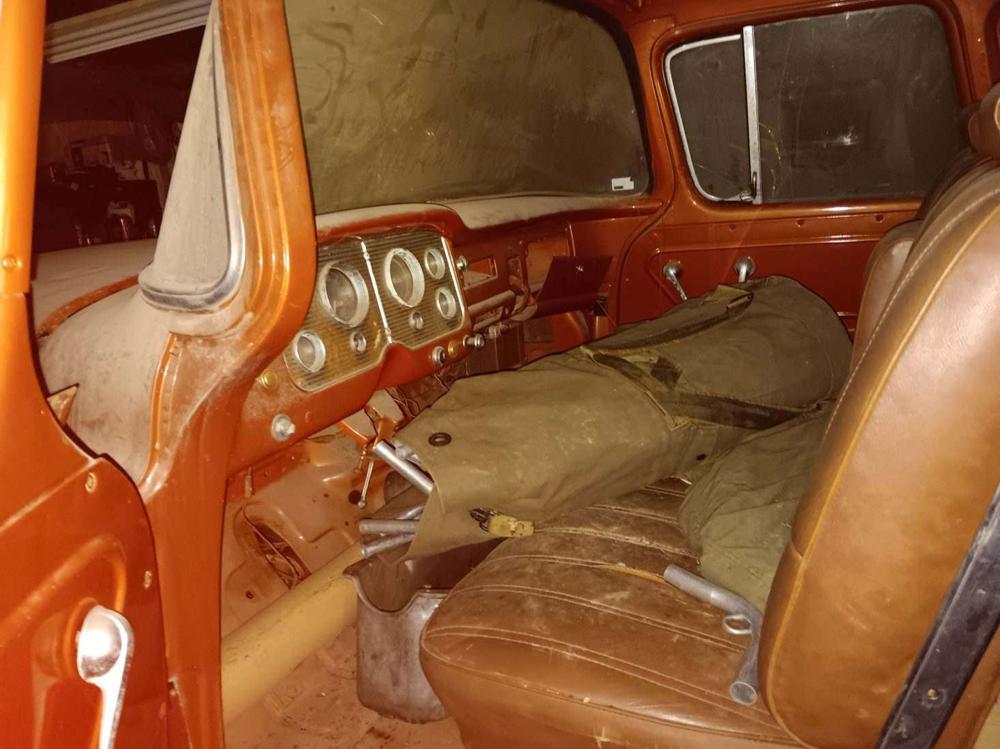
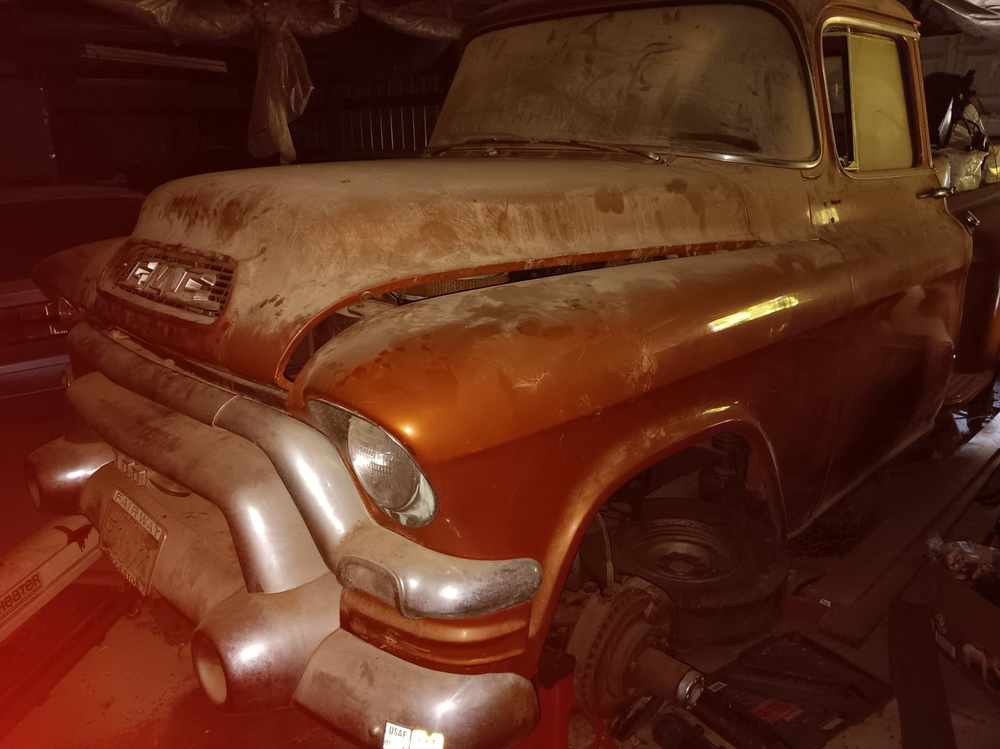
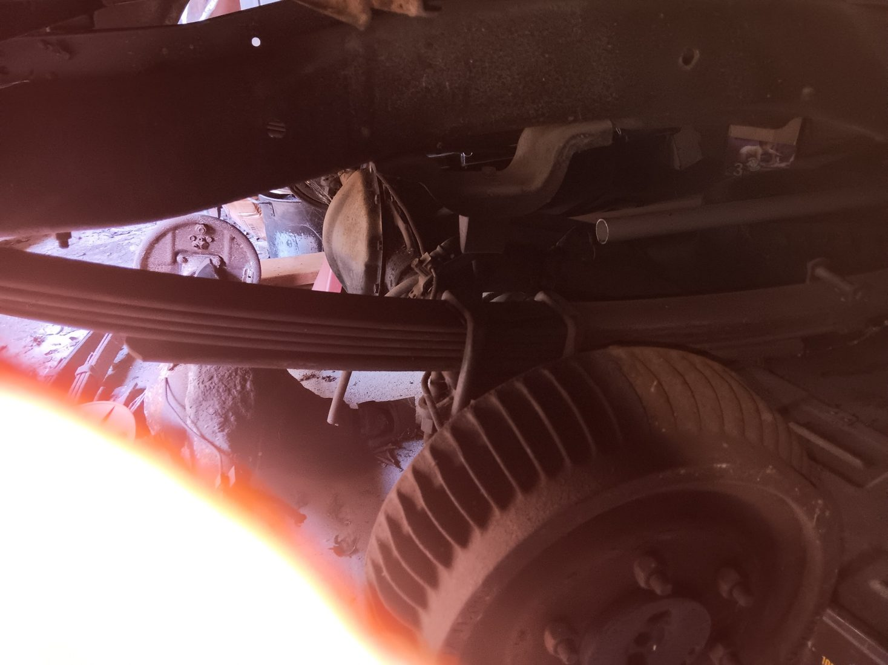
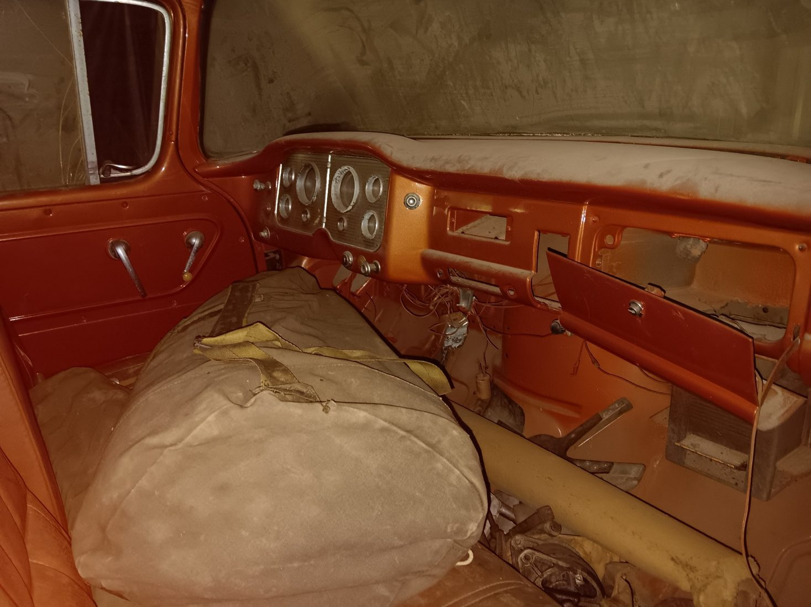
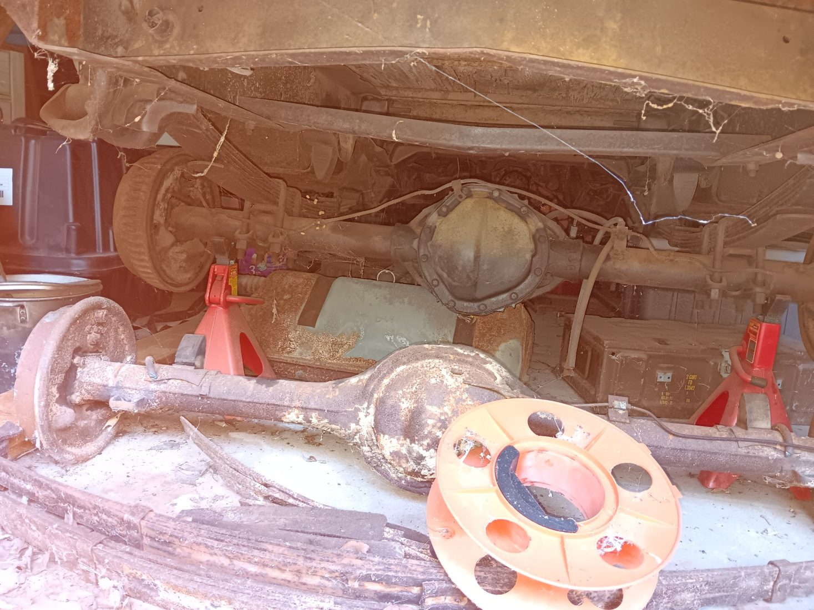
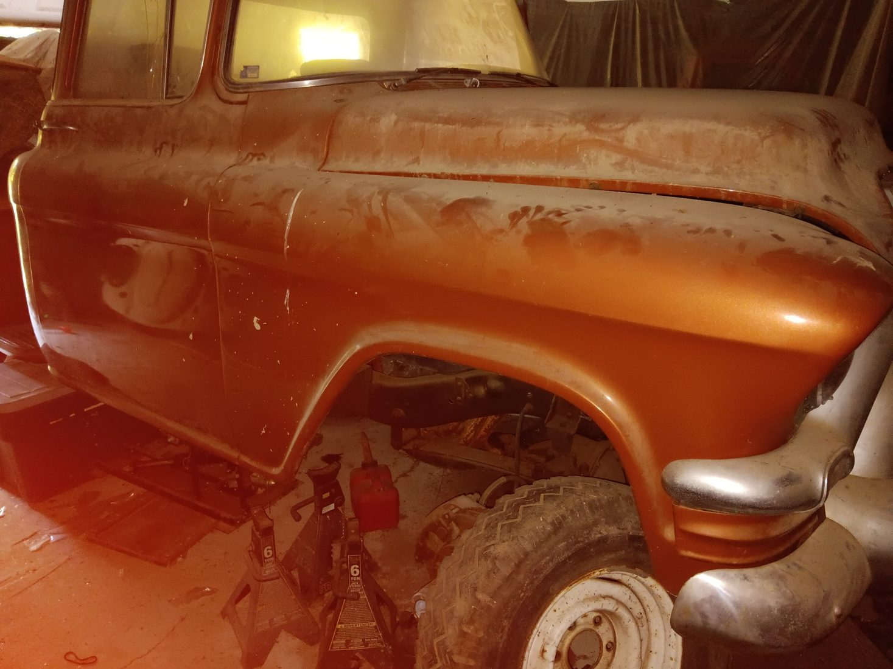

1956–1957 GMC Pickup
AS IS — FAIR OFFERS CONSIDERED

About This Truck
This GMC pickup is part of an estate collection and has not yet been thoroughly inspected. Believed to be a 1956 or 1957 model; exact year remains to be verified.
The truck was reportedly repainted in California before coming to Ohio. The body appears solid based on its current visual condition. The previous owner appears to have begun a four-wheel-drive conversion, but the project was never completed. Drivetrain condition and completeness have not been established.
Offers should be based primarily on the value of the body itself. Any other components or mechanical equipment should be considered a bonus until inspected and verified.
Photographs — Current Barn Condition





Photos show the vehicle as currently stored. No claim is made that the truck is roadworthy, running, complete, or mechanically sound. Inspection is encouraged before purchase.
← RETURN TO BUYERS PORTFOLIO